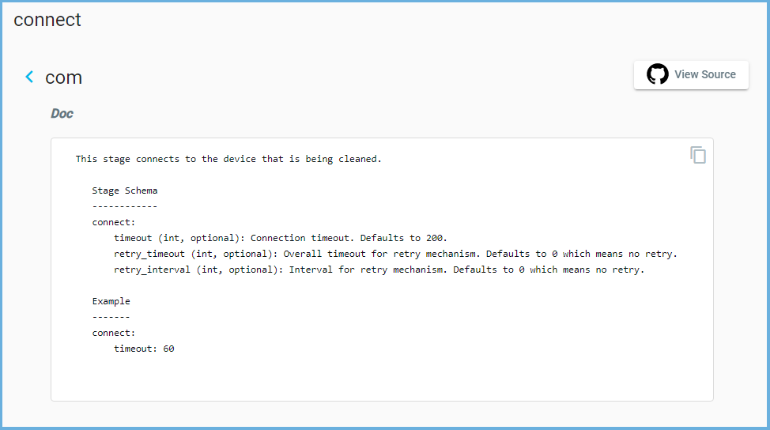

Defining a Stage (Clean Step)
In this section we will be adding a stage called connect. A stage, in simple terms, is a step in the clean.
Note
In the event you do not know what a stage is, what it does, and what arguments they accept, you can find that information in the Clean Stages document.
In the image below (taken from the Clean Stages Browser) we can see this connect stage has a some arguments we can also change. The browser will tell you what arguments are available, if it’s an optional argument, the default values, and the type of value it takes.
We will change the connection timeout to 100 in the Clean YAML. For any optional arguments, if they are not defined,
the default value is used.
1cleaners:
2 # This means to use the cleaner class `PyatsDeviceClean`
3 PyatsDeviceClean:
4 # The module is where the cleaner class above can be found
5 module: genie.libs.clean
6 # You can define many devices within the Clean YAML.
7 # Any that are not in this list are not cleaned even if they are defined below.
8 devices: [PE1]
9
10devices:
11 PE1:
12 connect:
13 timeout: 100
Next we need to provide the order of which our stages will execute in. To do this, simply add an order key at the same
level of hierarchy as stages. The order key is a list of stages we previously defined and is executed in the
top-down order.
1cleaners:
2 # This means to use the cleaner class `PyatsDeviceClean`
3 PyatsDeviceClean:
4 # The module is where the cleaner class above can be found
5 module: genie.libs.clean
6 # You can define many devices within the Clean YAML.
7 # Any that are not in this list are not cleaned even if they are defined below.
8 devices: [PE1]
9
10devices:
11 PE1:
12 connect:
13 timeout: 100
14
15 order:
16 - connect
It is supported to add as many stages as needed. Below is an example of adding another stage called
apply_configuration
under PE1 in the Clean YAML.
It will run after the connect stage as defined under the order key.
1cleaners:
2 # This means to use the cleaner class `PyatsDeviceClean`
3 PyatsDeviceClean:
4 # The module is where the cleaner class above can be found
5 module: genie.libs.clean
6 # You can define many devices within the Clean YAML.
7 # Any that are not in this list are not cleaned even if they are defined below.
8 devices: [PE1]
9
10devices:
11 PE1:
12 connect:
13 timeout: 100
14
15 apply_configuration:
16 configuration: hostname PE1
17
18 order:
19 - connect
20 - apply_configuration